A hand-operated go-kart control system designed to improve accessibility by enabling braking and acceleration without lower-body input.
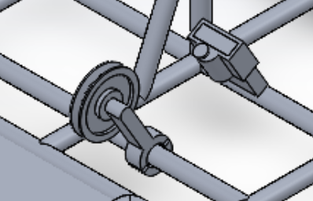
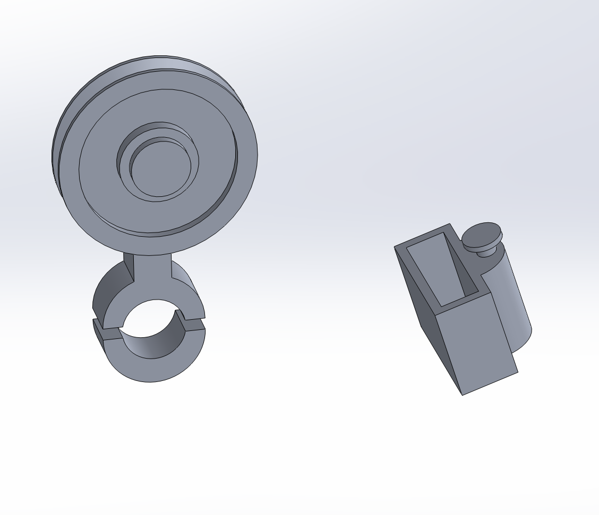
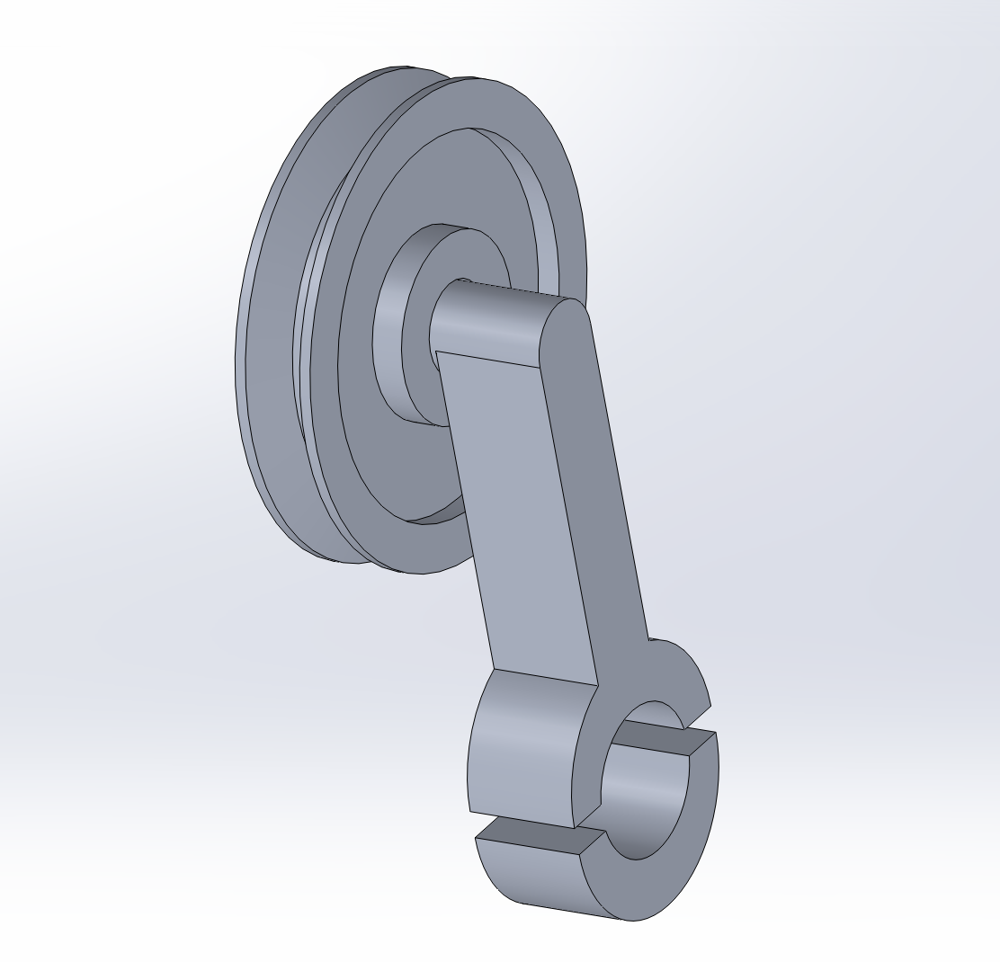
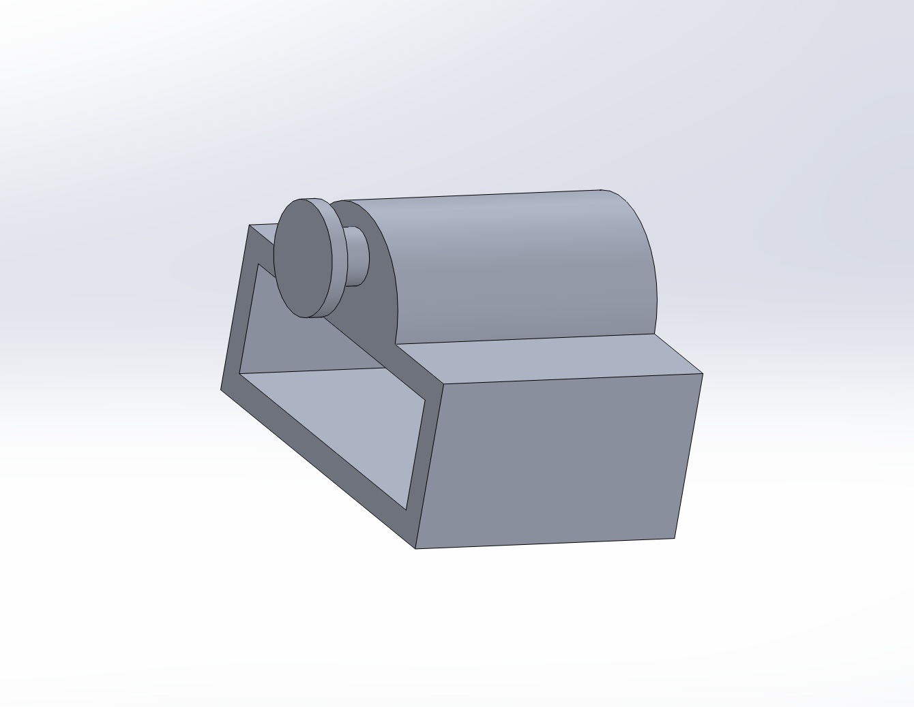
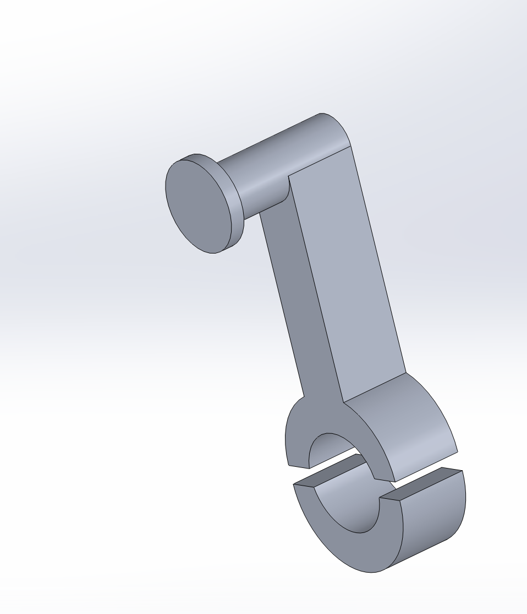
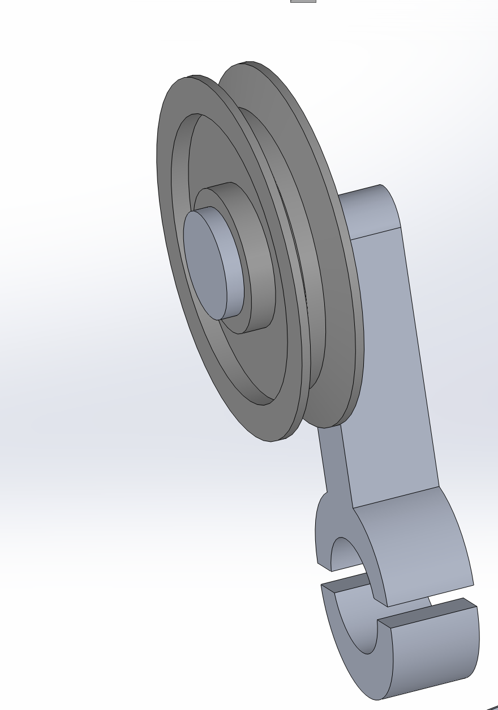
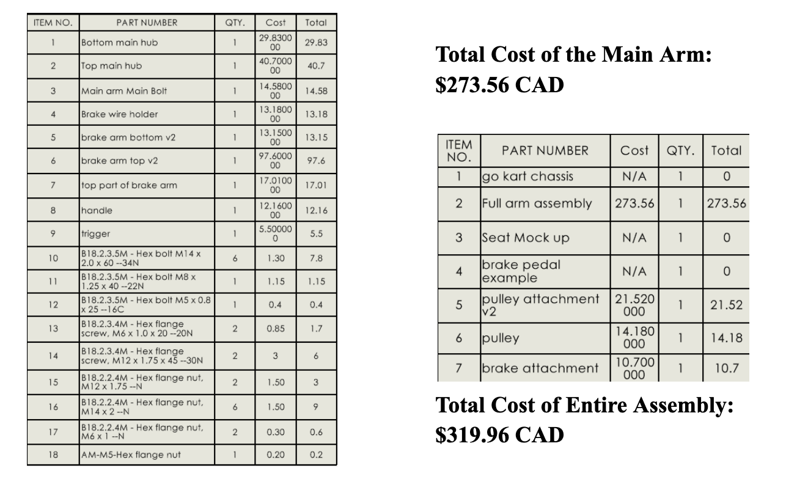
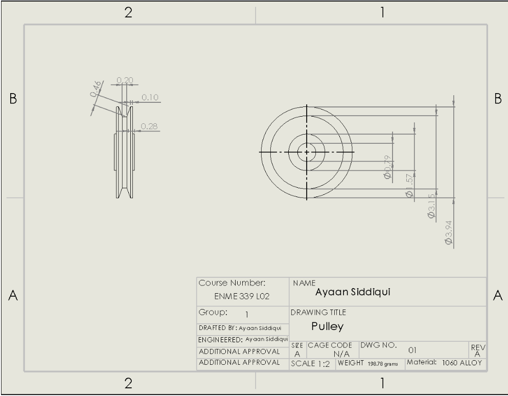
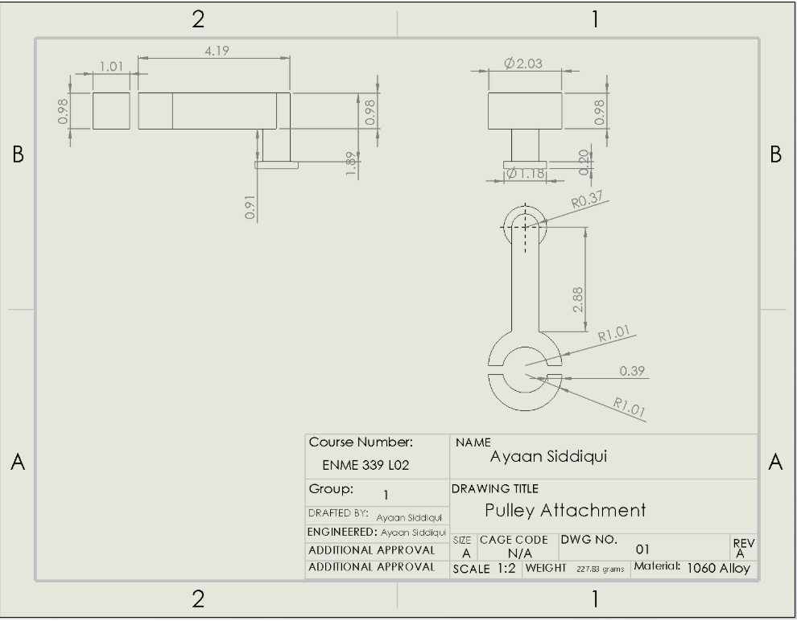
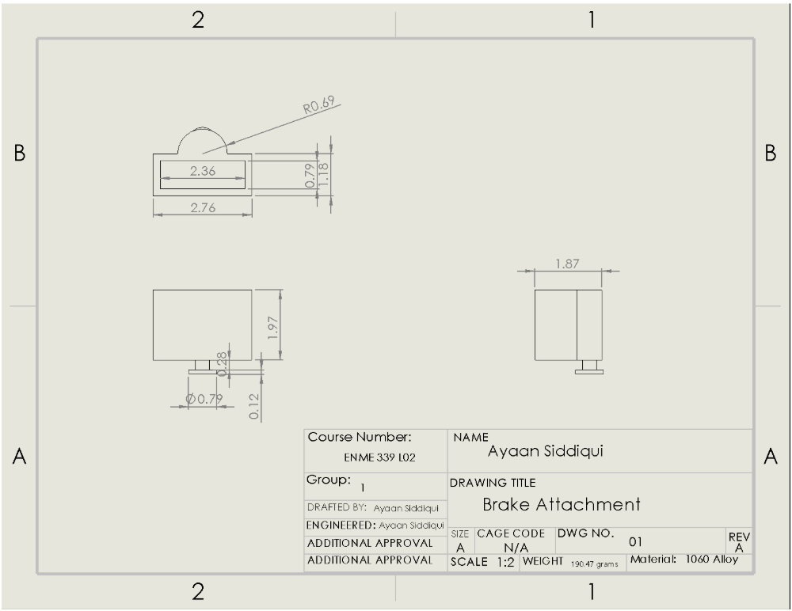
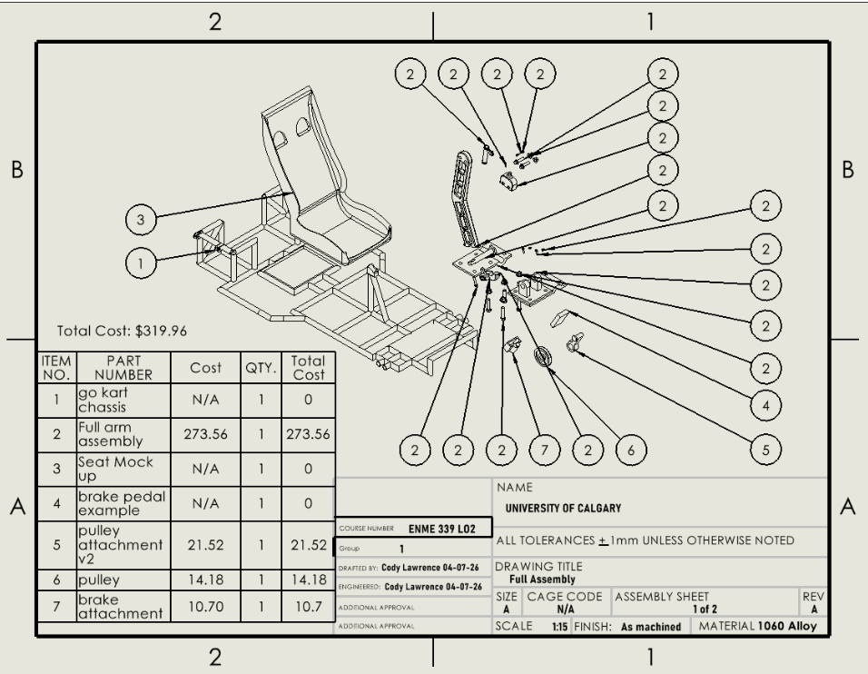
This project involved the design and development of a hand-controlled go-kart system intended to improve accessibility for individuals with limited or no leg mobility. The overall goal was to adapt a standard go-kart so that braking and acceleration could be fully controlled by hand, while still maintaining normal steering and preserving the functionality of the original vehicle.
The final concept was an add-on control kit that interfaces with the existing brake and throttle systems. A side-mounted handle controls braking, while a smaller trigger integrated into the handle controls acceleration. A pulley and cable system redirects the driver’s hand input into pedal actuation, allowing the kart to be operated without lower-body input. The design focused on mechanical simplicity, ergonomic control placement, ease of installation, and reliable operation.
This was a group project completed by a team of four from March 2026 to April 2026. In addition to CAD modelling, the project required engineering drawings for each part, material selection, and cost analysis to ensure the design was practical and cost-efficient. The final system consisted of multiple integrated components that worked together as a complete hand-control assembly.
My primary contributions focused on the pulley, pulley mount, and brake pedal integration. These components were important in translating hand motion into effective braking force, and required careful consideration of geometry, mechanical function, and compatibility with the rest of the kart system. Working on these parts helped me strengthen my understanding of how individual components must be designed not only on their own, but also as part of a larger mechanical assembly.
Overall, this project strengthened my skills in SolidWorks, technical drawings, material selection, and design for manufacturability, while also showing how engineering design can be used to make recreational systems more accessible and inclusive.